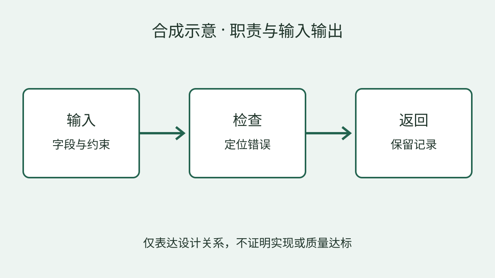

第一验证周期 · 负责人综合自评
synthetic-progress；示例评估人；示例截止点
候选口径，未作成熟度结论全部为虚构内容，用于展示四种周期汇报单页与通用图像证据页；源计划是模板起点，结构填充在本预览中示范。没有新的导航运行时。
合成项目 · 示例工作线
定义输入、输出与错误信息。
以构造样例检查设计。
提交接口说明与示例记录。
确认覆盖范围与信息缺口。
第一验证周期 · 负责人综合自评
synthetic-progress；示例评估人；示例截止点
候选口径，未作成熟度结论本周期尚无可核对进度
synthetic-progress；来源缺口待确认
待核验状态判断：局部验证推进中，进度缺口待确认
合成项目 · 示例工作线
研究主题
研究进展
已形成接口说明与两个构造样例记录
已在设计中明确字段与约束。
仅有建议，仍需补样例。
覆盖不足，暂不能据此判断。
仅为构造示例；设计、验证和建议分别表达。
合成项目 · 示例工作线
两个构造样例不能证明完整覆盖、实现完成或长期稳定性。
两项证据共同提供评审输入，不证明评审通过、已实现或完整场景验证。
合成项目 · 示例工作线
| 重点任务 | 预期交付 | 如何核对 |
|---|---|---|
| 补异常输入样例 | 异常路径记录及复现步骤 | 按已确认字段核对错误返回 |
| 明确覆盖缺口 | 覆盖清单与未验证项 | 逐项说明已验证条件和缺口 |
负责人和日期待确认；拟议，未经承诺
前提：确认字段约束和核对口径
仅为构造示例；设计、验证和建议分别表达。
合成项目 · 图像主证据
图中关系可作为接口评审输入，不证明实现或质量达标。

查看完整合成图输入、检查与返回的关系均可定位。
职责可分别检查，是接口评审的输入。
设计关系不能证明实现完成或质量达标。